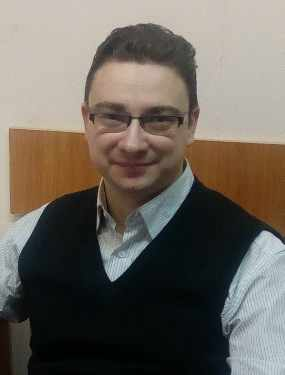
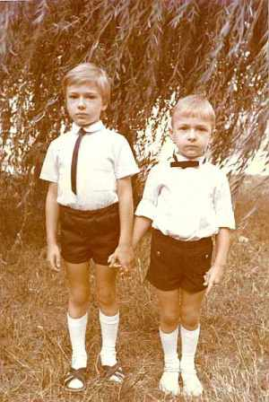
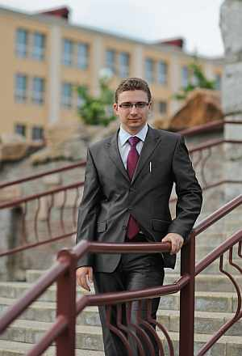

Кравчук Дмитрий СергеевичРодился 26.04.1986 в г.Щучин, Гродненской обл., Беларусь. Практически сразу после рождения семья обосновалась в Гродно. Имеет вышее экономическое образование, в 2014 женился на Цуприк Ирене Николаевне, работает экономистом в Гродненском ф-ле РУП "Белпочта". |

с братом Ярославом перед школой 2012г. |
|
Родители:
Братья/Сестры: Дети:
|